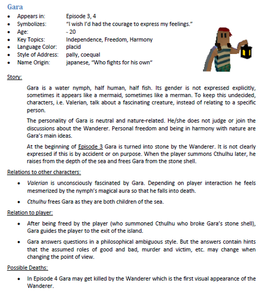

Character Design
"Character design is a form of concept art and involves defining a character's physical appearance, personality, behavior and aesthetic."¹
You might think: I'm making a jump and run game, my character doesn't need a backstory. But even then creating a little backstory can make your game more believable. What about the way your character jumps? Maybe they were hurdle racing in high school or they did parkour. That affects the way the animation might look.
When playing Mario Kart, which character are you choosing and why? They might differ slightly in weight, but other than that for the purpose of the game they are pretty much equal.
The archetypes described in the hero's journey might also help you define your character and their intentions behind their actions.
Silent protagonist or 3rd person
Aspects of your character:
What personality traits does your character have? Are they usually happy and high energy or are they rather grumpy and a loner?
The phenotypical details of the character, like haircolor, height, gender, clothes or can the player deside what the character looks like (i.e. The Sims, Baldurs Gate 3 etc.).
One part of the story is the backstory of the character. How they came to be what they are
now.
I.e. how they grew up, where they live etc.
The other part is how they fit into the storyline of
the
game. Why are they where they are right now and how does that fit into your story? This also goes
along
with your worldbuilding. How does the world your character grew up in influence them?
All the aspects of your character should be put down on a character sheet. This will not only help you to
remember your ideas but can also be an amazing reference for later in the developement process.
This is a character sheet for a character from "A Room Beyond" - René Bühling 2017
Greinus, T. (2021, December 9). Was ist ein Charactersheet und wie sieht es aus?
Create a character sheet for for your own character or for one from a different video game.
Sources:
De Carvalho, F. S. (2024). Dynamic character design: Draw faces and figures with pencil, markers, digital tools, and more. Walter Foster.
King, S. (2023). Digital character creation for video games and collectibles (First edition.). CRC Press.
Killick, M. (2022). The Way We Play: Theory of Game Design (1st ed. 2022.). Apress.
Wall, S. (n.d.). What is Character Design for Film & Games? | CG Spectrum. Retrieved August 31, 2024, from https://www.cgspectrum.com/blog/what-is-character-design
Schell, J. (2019). The Art of Game Design, 3rd Edition (3rd ed.). A K Peters/CRC Press. https://learning.oreilly.com/library/view/the-art-of/9781351803632/